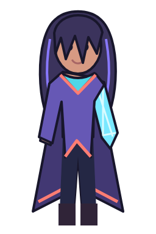
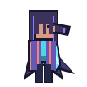
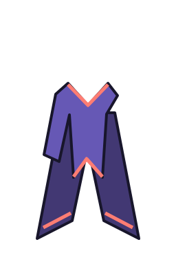
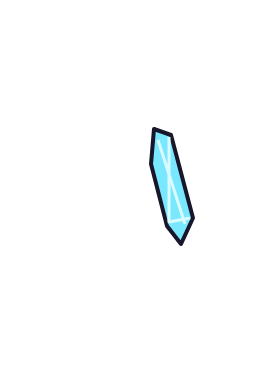
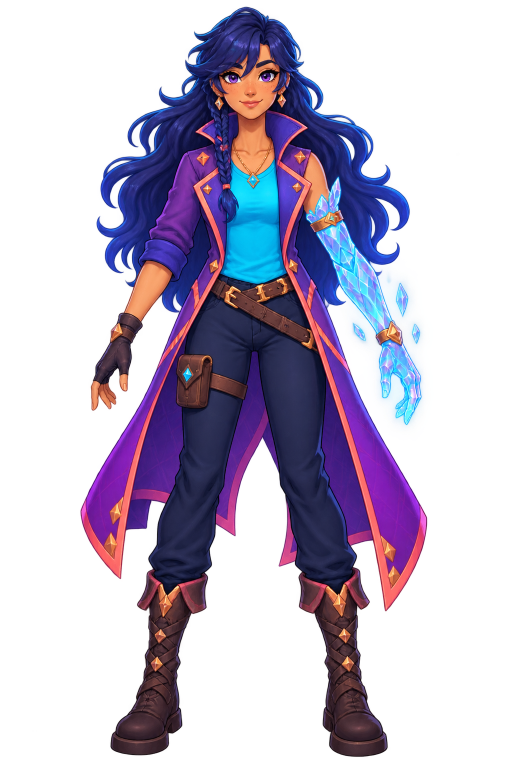

{kind=link}
{kind=link}
256 × 256 · smooth sampling
TASK-002 · Composition vertical slice
One recipe.
Every output.
These renders prove deterministic named-plane composition, targeted body-region replacement, and shared recipe intent across portrait, full-body, and directional sprite profiles.
Shared recipe proof
Resolved outputs
Checkerboards show actual transparency. Select any image to inspect its native PNG.
{kind=link}

256 × 384 · smooth sampling
{kind=link}
96 × 96 · nearest-neighbor sampling
{kind=link}

96 × 96 · explicit directional artwork
Isolated evidence
Layer and replacement checks
Each isolated view is composed from the same fragment files used above.
{kind=link}
Two-plane hair
hair-back sits behind anatomy; hair-front restores the bangs in front of the face.
{kind=link}

Tailed coat
The tail uses garment-behind-body; lapels and sleeves use garment-overlap.
{kind=link}

Targeted replacement
The crystal module suppresses only body.arm.left.base and restores body.arm.left.skin coverage.
Reviewer checklist
What needs human eyes
Technical validation and exact-pixel goldens are passing. Human acceptance remains separate.
- Hair reads continuously while clearly passing behind and in front of the head.
- Coat tails remain behind the legs while the front coat remains above the shirt and body.
- The crystal arm replaces only the normal left arm without creating an anatomy gap.
- The character’s palette and silhouette remain recognizably consistent at all three scales.
Resolved asset versions
starter.base.standard@1.0.0starter.body.arm-left-crystal@1.0.0starter.hair.long-wave@1.0.0starter.outerwear.long-coat@1.0.0starter.top.simple-shirt@1.0.0
Known limitations
- Proof artwork is deliberately small and geometric, not production catalog art.
- Only the idle sprite frame is in scope; complete clips belong to TASK-006.
- Palette values reach resolved draw items, while mask-based recoloring remains future work.
Art-direction reference
Silhouette before fragments
A generated reference established the indigo/cyan/violet palette and made the back hair, coat tails, and crystal arm visually distinct. The executable proof translates those cues into deterministic, independently testable geometry.
